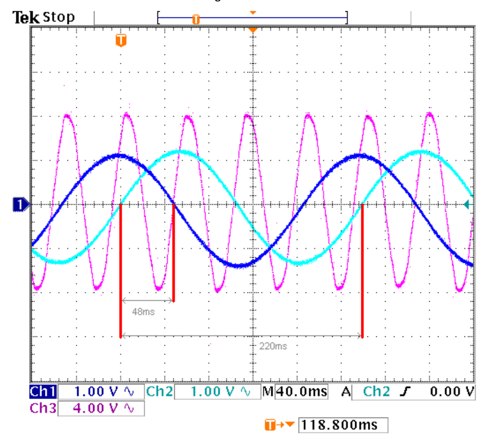

Apple Harvester Drive System
Documenting the development of a robust drive system for an automated apple harvester.
Project Overview
This project involved enhancing the drive system software for an automated apple harvester. My work focused on significantly improving the system's precision and stability, especially in navigating rough terrains. By refining the control algorithms and optimizing the existing software, I contributed to achieving more reliable and accurate operation of the harvester in challenging agricultural environments.
Background
Advanced Farm develops robotic strawberry and apple harvesters, with 2023 being the first year the apple harvester was brought up. This harvester re-used a lot of our technical stack from strawberry harvesting and allowed us to pick over 80,000 apples!
Project Motivation
The need for this project arose from a quick realization that we needed to stay centered in an apple trellis to pick effectively and reduce downtime. Being unable to stay centered introduces the following issues:
- The work volume of our robots became limited or out of range.
- Robots are more likely to snag when driving towards one side of the trellis.
- The harvester is unable to correct its steering angle, and you risk damaging the orchard.


High Level Overview
Before I jump into my approaches and design, let me give you some insight into the system I had to become familiar with.
- Control Systems: PID Control
- Steering: Electric Differential
- Motors: I&W EMAC Motors
- Controllers: Sevcon Gen4 Compact AC Controllers
- Communication Protocols: CAN, CANOpen
- Sensors: Encoders
- Programming Languages: Python
Here is a high-level CAN network diagram I made for the strawberry harvester that remains mostly unchanged for the apple harvester.

The harvester is a complex distributed system. To manage the sequencing of various services around the harvester, we use systemd on each of the service nodes. Below is a diagram of some of the key services running on our master computer.

Technical Details
I decided to break down the technical portion of this project into three parts, to which I will individually dedicate a section:
- Section 1: Commissioning the Sevcons and Drives
- Section 2: Testing and Iteration
- Section 3: Features Implemented
Section 1: Commissioning the Sevcon Gen4 Compact AC Controllers
CANOpen devices utilize the object dictionary to store all communication and application parameters. Each parameter owns a unique 24-bit address consisting of a 16-bit index and an 8-bit sub-index. These parameters are accessible through various CANOpen communication services.
The Sevcons adhere to the CANOpen standard and are mainly configured through the object dictionary. It took a lot of research and reaching out to Sevcon and I&W to finally get a drive fully commissioned and working with the I&W PMAC drives. For the majority of this phase, I used the Windows DVT software provided by Sevcon for writing to the controller's object dictionary.
Wiring and Components
- 48-volt power supply - 4 batteries in series
- 48-volt Contactor - Driven by analog out on the Sevcon
- 24-volt Relay - Driven by enable signal. Supplies key switch signal to Sevcon
- I&W Drive - Interfaces with Sevcon through UVW phase leads and Amphenol connector
- Sevcon Gen4 Controller - Controls I&W drive
- 32-pin Ampseal connector - Consolidates wiring from all components and plugs into Sevcon
- 8-pin Amphenol connector - Carries motor encoder, temperature, and brake signals.

Sin Cos Encoder Installation
PMAC stands for Synchronous Permanent Magnet AC and behaves differently than your typical Asynchronous Induction motor. In the case of the PMAC motor, the rotor has magnets inside that move synchronously with the stator magnetic field, meaning the output frequency of the drive and motor speed are the same.
I actually got to do a teardown of one of these motors so you can see the stator and rotor below:


The Sevcon uses the sin cos encoder to calculate the mechanical angle based on where in space the rotor flux is pointing.

The Sevcon requires that the encoder's sin and cos signals be wired into pins 21 and 34. Before doing so, however, the Sevcon's object dictionary needs to be configured with the minimum and maximum sin and cos voltages. To do this, I probed the encoder signals and manually rotated the motor to find the peak and trough voltages. You can also determine the motor UVW cable arrangement through a similar method, but luckily the order was already known.



Motor Parameters
In addition to the encoder, I had to configure some more miscellaneous parameters. Here are a few worth noting:
- Contactor pre-charge - Prevents damage from inrush current by closing the contactor too quickly
- Voltage torque-cutback map - Defines specific voltage thresholds where the torque output needs to be reduced
- Communication parameters - Setup motor to publish mapped data and subscribe to specific messages
Here is an example of the data configured to get sent over the bus:


Additionally, the Sevcon has two modes to choose from: torque and speed mode. I chose to operate in speed mode since it would provide some instant benefits for precise control. Here is the PID for speed control running on the Sevcon:

The gains for the PI loop can be configured through the object dictionary. The Sevcon also performs some gain scheduling, providing a set of low and high-speed gains you can tune—more on this later.
At this stage, I had a motor with some crude gains that could follow a commanded speed. With this in place, the motor was commissioned, and I could move onward to implementing the Python code to control the Sevcons.
Section 2: Testing and Iteration
Drive System Test Fixture - Dyno
For safety and iteration time, I needed a fixture where I could mount the drives and allow them to freely rotate. The CTO helped by building the frame while I worked on the electrical. In the end, this test fixture also ended up being useful for HWIL (Hardware-in-the-Loop) testing for future changes to the drive system service.


Sevcon Test Bench State Machine and Methods
Structure of the test bench Python script I wrote to support the drive system test fixture.

Method to replay captured data on the test bench to emulate field control and tune gains and features.
Section 3: Features Implemented
Encoder Position Feedback
Class to asynchronously capture analog frames from the CAN bus and return voltages for sin and cos signals.
Class to track angle and rotations given encoder sin and cos signals.
PID Controller
Update method for custom PID controller class.
Method to send out commanded speeds. Run asynchronously on a loop.
Better Braking Behavior and Contactor Precharge States
State diagram for the Sevcon controller. States in blue are ones I modified or created.

Exponential Joystick Map
Implemented an exponential joystick map to provide better handling at low to mid speeds while still providing full power at full deflection.

Results
Here is a plot I generated that tracks commanded and measured position information from real-life trellis driving before I implemented my features:

And here is the same plot after I implemented my features: